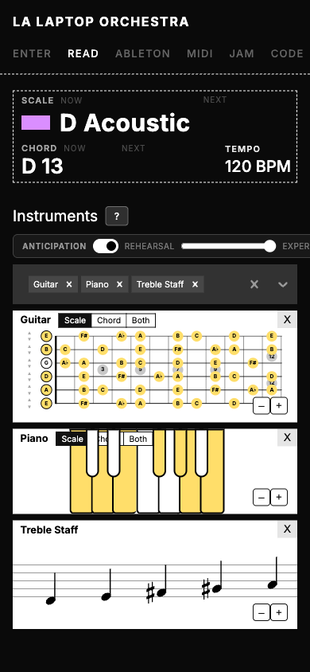
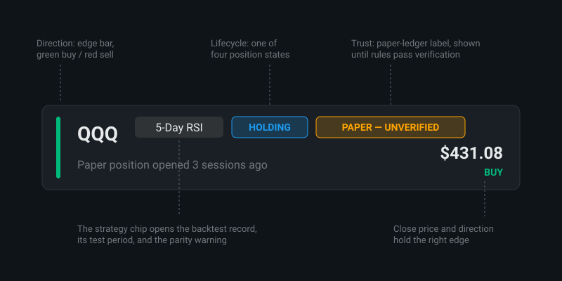
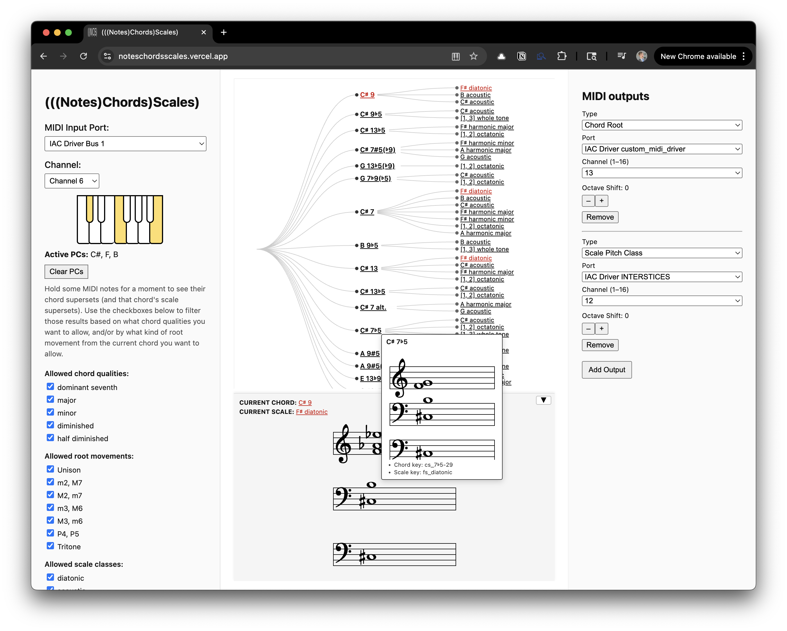

Selected Dashboard & Interface Work
Role · Product manager & developer
A short index of interfaces where dense, live data has to read at a glance. Each entry links to its full case study.
Four interfaces, each built for a specific person with a specific decision to make. The detailed stories live on their own pages; this is the map.
01 · Enter / Read — LA Laptop Orchestra
The door into a room of mixed musicians: one URL greets each participant with the room's shared scale and chord and gives them live notation for their own instrument, from 25 instrument and notation options. Its central interaction is anticipation, notation that warns you before the harmony moves, with lookahead presets from Rehearsal to Expert. I designed and built the Enter, Read, and Rehearse apps, with design collaboration from Leone Ermer.

READ's default stack following the room's harmony, captured from the live app.
02 · HMR EOD Scanner
An end-of-day analytics dashboard for my family's trading-research group: twenty-six strategies scanned against the market's close, reviewed by family members whose decision is which match deserves a closer look. Direction, position lifecycle, and trust each get their own place on every card, backtest evidence sits one tap away behind its parity warning, and the page degrades by removing labels rather than going down. I designed and built it; the backtest records come from Cam Lockrey's TradeStation runs and the group's Python scripts.

The anatomy of one signal card. Recreation: real tickers, fictional figures.
03 · NotesChordScales
You play; it names the harmony. A real-time display that listens to whatever notes are sounding and ranks what they could mean as a hierarchy of note, chord, and scale, drawn in D3 and re-ranked as you play; run anything through audio-to-MIDI and it reads a voice or an engine the same way. I designed and built it solo, on web and as an AU plugin, and used it to score a twelve-minute film by harmonizing with an airboat engine.

Live musical data, named and ranked while you play.
04 · Scale Navigator Dashboard
One surface holding the session's harmonic state: a direct-manipulation network of fifty-seven scales in which neighbors differ by a single note, broadcast over MIDI and automatable plugin parameters to everything that follows, including the LA Laptop Orchestra apps above. Eight years of public iteration, an iOS launch in March 2026, and a usability test that named onboarding as the current problem. I designed and built it, with credited engineering, brand, and research collaborators on the full page.

The shipped network view: the center is where you are; everything touching it is one note away.